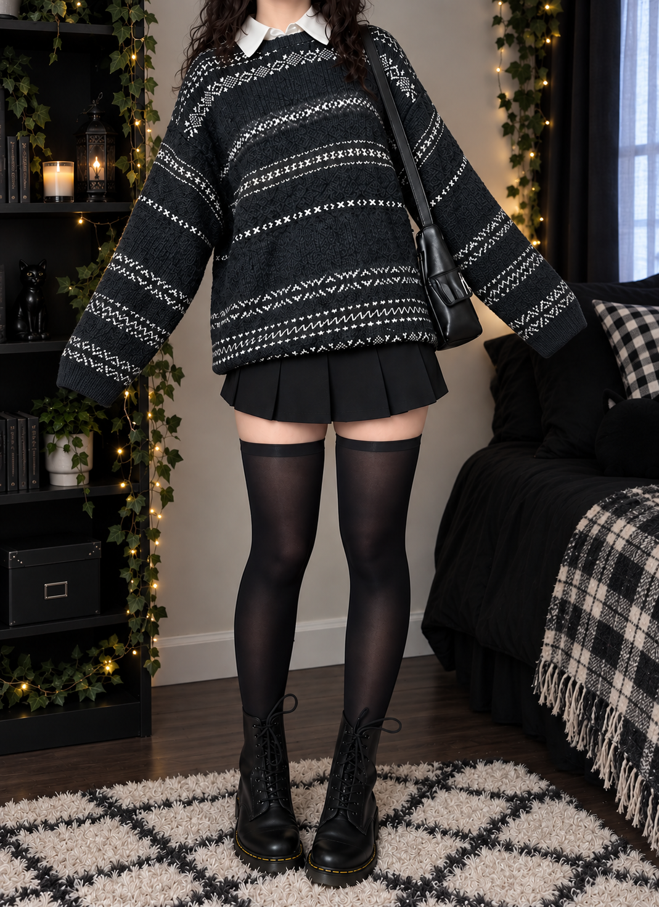

Striped Green Sweater
The original sweater was thrifted! This is a similar striped knit sweater as an alternative.

Recreate this alternative look ♡
A dark, alternative-inspired look with a forest-green striped sweater, crisp white collar, black pleated skirt, thigh-high socks, chunky boots, and a black shoulder bag. Perfect for a moody, vintage-inspired outfit!
Find similar pieces and recreate this outfit with the links below.
The original sweater was thrifted! This is a similar striped knit sweater as an alternative.
A classic white button-up shirt to layer underneath the sweater.
A pleated black mini skirt to complete the alternative-inspired silhouette.
Long black socks to pair with the pleated skirt and chunky boots.
Chunky black boots that give the outfit its classic alternative edge.
A simple black shoulder bag to finish the outfit with a practical accessory.